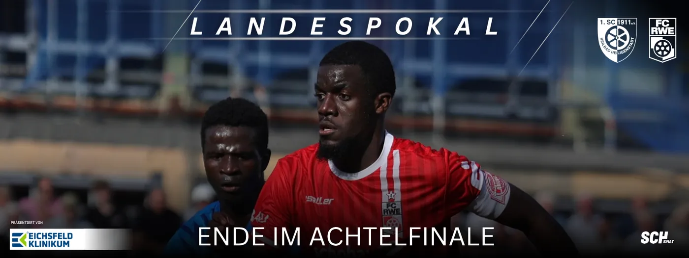
Ende im AchtelfinaleFrüher Rückstand, lange in Unterzahl: SCH scheidet gegen Erfurt aus Die Überraschung im Gesundbrunnen ist ausgeblieben. Unser SCH hat das Achtelfinale im Thüringer Landespokal gegen den FC Rot-Weiß Erfurt mit 0:5 (0:3) vBeitrag lesen MATCHDAY! AM SONNTAGPokal im Gesundbrunnen: Ein besonderer Gegner, eine eigene Geschichte Der FC Rot-Weiß Erfurt gastiert in Heiligenstadt. Um 14 Uhr trifft unser SCH im Gesundbrunnenstadion auf den Regionalligisten aus der LandeshauptstadtBeitrag lesenParksituation zum Landespokal-AchtelfinaleFür das Landespokal-Achtelfinale gegen den FC Rot-Weiß Erfurt gilt eine geänderte Verkehrs- und Parksituation rund um das Gesundbrunnenstadion. Bitte berücksichtigt die folgenden Hinweise bei eurer Anreise. Aufgrund verkBeitrag lesen
MATCHDAY! AM SONNTAGPokal im Gesundbrunnen: Ein besonderer Gegner, eine eigene Geschichte Der FC Rot-Weiß Erfurt gastiert in Heiligenstadt. Um 14 Uhr trifft unser SCH im Gesundbrunnenstadion auf den Regionalligisten aus der LandeshauptstadtBeitrag lesenParksituation zum Landespokal-AchtelfinaleFür das Landespokal-Achtelfinale gegen den FC Rot-Weiß Erfurt gilt eine geänderte Verkehrs- und Parksituation rund um das Gesundbrunnenstadion. Bitte berücksichtigt die folgenden Hinweise bei eurer Anreise. Aufgrund verkBeitrag lesen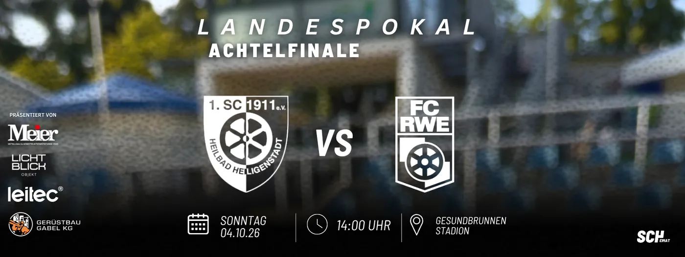
Alle unsere Spiele am Wochenende🔜 SCHRWE Achtelfinal Landespokal 🆚 FC Rot-Weiß Erfurt 🕒 Sonntag 04.10.26 | 14:00 Uhr 🏟️ Gesundbrunnenstadion 💻 Der ausführliche Liveticker auf: https://t1p.de/llxkm 🎥 Zur Liveübertragung: https://t1p.de/hnpps Auf geht`s Beitrag lesen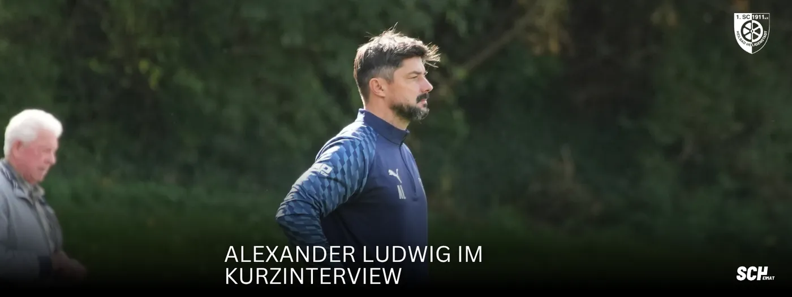
Mutig ins Pokalspiel: Alexander Ludwig im KurzinterviewAlexander Ludwig: „Als Mannschaft zusammenhalten und mutig spielen“ Im Kurzinterview vor dem Pokalspiel gegen den FC Rot-Weiß Erfurt spricht unser Trainer Alexander Ludwig über die Rolle unserer Mannschaft, die sportlichBeitrag lesen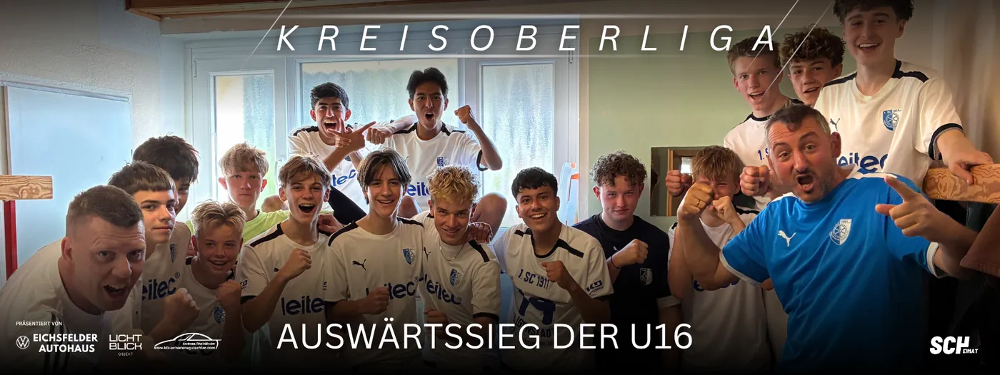
Auswärtssieg der U16Doppelschlag vor der Pause, fünf Tore auswärts: Unsere U16 überzeugt in Gerbershausen Drei Punkte, fünf eigene Treffer und eine Leistung, mit der das Trainerteam zufrieden sein konnte: Unsere B2-Junioren haben ihr AuswärBeitrag lesen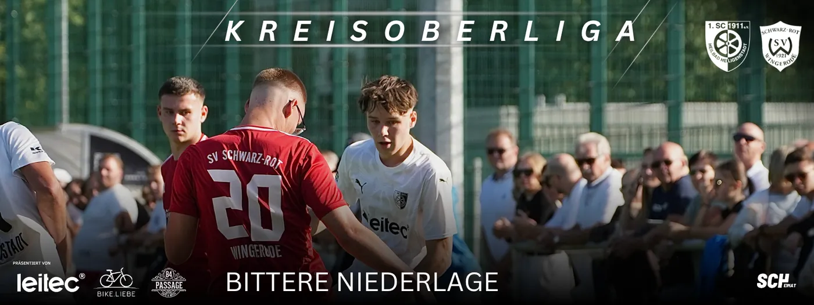
Bittere NiederlageEin Tor entscheidet: Papst-Elf lässt gegen Wingerode Punkte liegen Es war mehr möglich an diesem Sonntagnachmittag. Unsere zweite Mannschaft musste sich der SG SV Schwarz-Rot Wingerode auf dem Kunstrasenplatz am GesundbrBeitrag lesen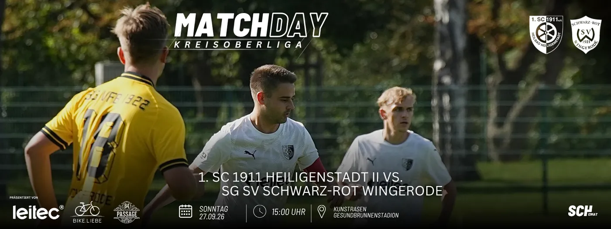
MATCHDAY AM SONNTAGSpitzenreiter zu Gast: Papst Elf empfängt Wingerode Der Sonntagnachmittag am Gesundbrunnen verspricht ein interessantes Duell. Um 15:00 Uhr empfängt unsere zweite Mannschaft die SG SV Schwarz Rot Wingerode auf dem KunstrBeitrag lesen AUSWÄRTSSIEGGeduld belohnt: Wolanski schießt die Ludwig-Elf zum Auswärtssieg Ein Pfosten, ein Querbalken und lange kein Tor. Die Ludwig-Elf musste am Samstagnachmittag in Geraberg viel Geduld aufbringen, belohnte sich aber doch nochBeitrag lesen
AUSWÄRTSSIEGGeduld belohnt: Wolanski schießt die Ludwig-Elf zum Auswärtssieg Ein Pfosten, ein Querbalken und lange kein Tor. Die Ludwig-Elf musste am Samstagnachmittag in Geraberg viel Geduld aufbringen, belohnte sich aber doch nochBeitrag lesen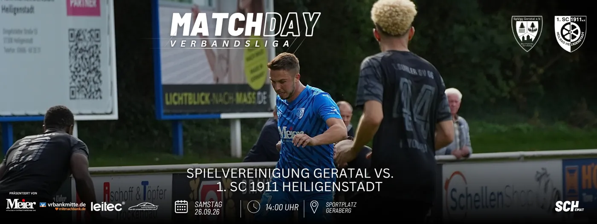
MATCHDAY! AM SAMSTAGAm Nordrand des Thüringer Waldes: SCH will in Geraberg nachlegen Der siebte Spieltag führt unsere Mannschaft heute nach Geraberg. Um 14 Uhr trifft die Ludwig Elf auf dem Sportplatz Geraberg auf die SpVgg Geratal. Nach deBeitrag lesen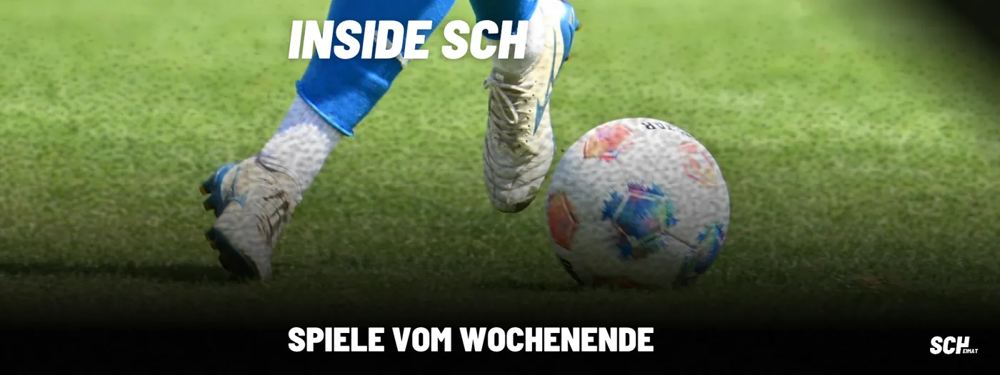
Alle unsere Spiele am Wochenende🔜 SPVGSCH 7. Spieltag Verbandsliga 🆚 Spielvereinigung Geratal 🕒 Samstag 26.09.26 | 14:00 Uhr 🏟️ Sportplatz Geraberg 💻 Der ausführliche Liveticker auf: https://t1p.de/6govj Auf geht`s 💙🤍 Unsere Spiele am Wochenende – alleBeitrag lesen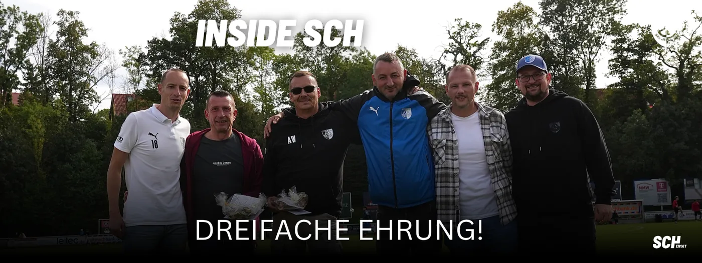
Dreifache Ehrung!Drei Jubiläen im September: Besondere Ehrungen im Gesundbrunnen Nicht nur auf dem Rasen gab es am Wochenende Grund zur Freude. In der Halbzeitpause des Verbandsligaspiels nutzten wir die Gelegenheit, drei Menschen aus unBeitrag lesen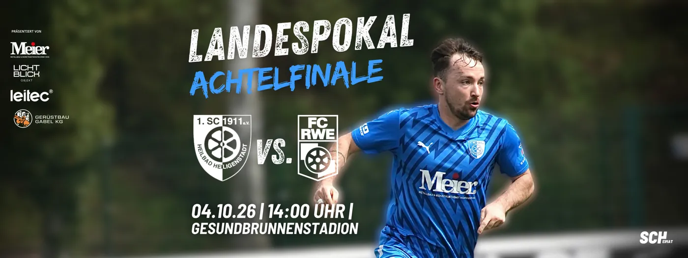
Pokaltermin steht!Pokaltermin steht: Rot-Weiß Erfurt kommt am 4. Oktober in den Gesundbrunnen Jetzt herrscht Planungssicherheit: Das Achtelfinale im Thüringer Landespokal gegen den FC Rot-Weiß Erfurt ist terminiert. Unsere Mannschaft empfBeitrag lesen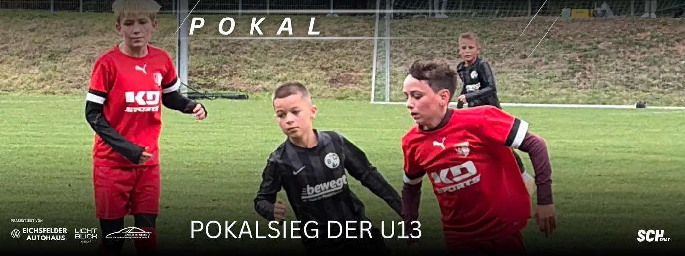
Pokalsieg der U13Starke Reaktion nach Rückstand: U13 zieht in die nächste Pokalrunde ein Unsere U13 steht in der nächsten Pokalrunde. Die Mannschaft von Trainer Andreas Seipel setzte sich am Samstagvormittag auf dem Stelzenberg mit 3:1 (Beitrag lesen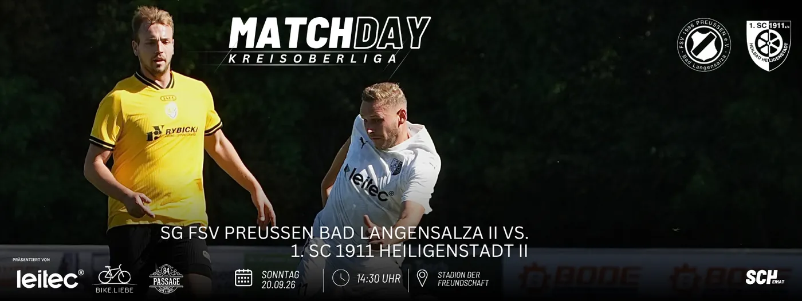
MATCHDAY AM SONNTAGZwischen Pokalfrust und Ligaalltag: Papst-Elf reist nach Bad Langensalza Nach dem Pokal-Aus ist wieder Kreisoberliga. Unsere zweite Mannschaft ist am heutigen Sonntagnachmittag bei der SG FSV Preußen Bad Langensalza II zBeitrag lesen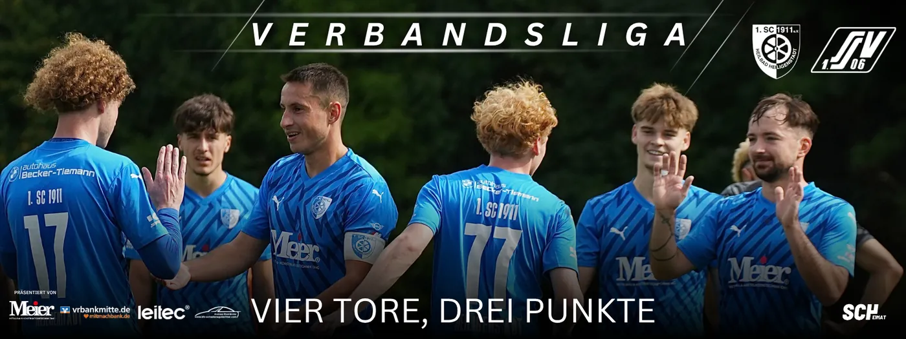
Vier Tore, drei PunkteVier Tore, drei Punkte: SCH löst Heimaufgabe gegen Suhl souverän Der SCH hat am sechsten Spieltag der Verbandsliga die passende Antwort auf die Niederlage in Weida gegeben. Vor 205 Zuschauern setzte sich die Ludwig-Elf mBeitrag lesenÄltere Beiträge auf der Vereinsseite
Quelle: www.sc1911-heiligenstadt.de · Stand 06.10.2026